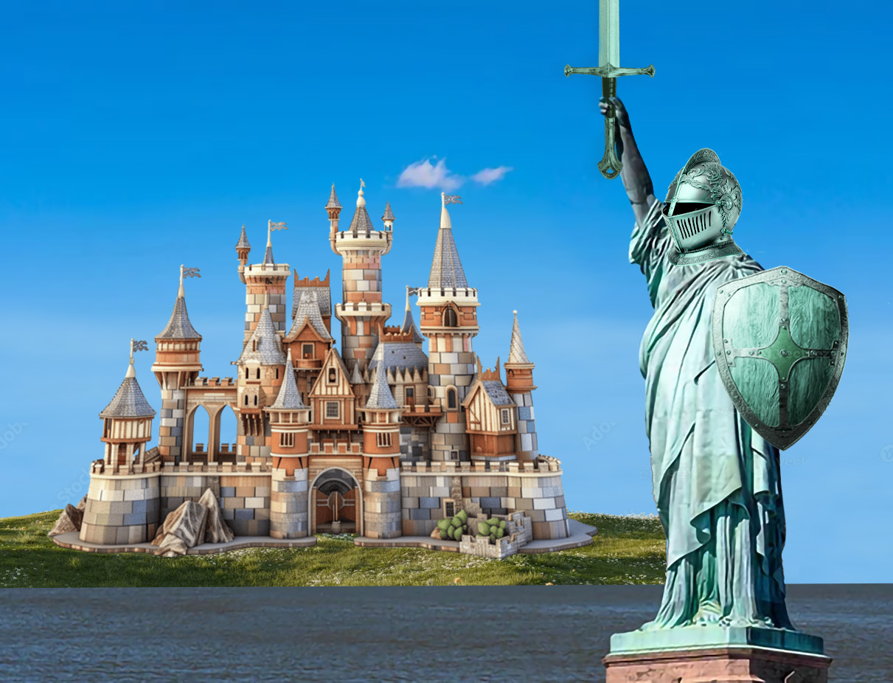
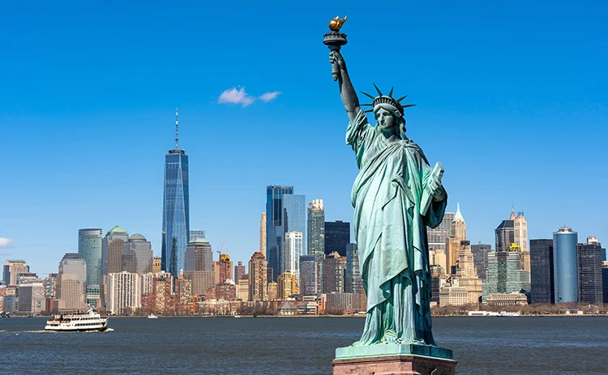

Lesson 9 Photoshop Design Project
For this design project, I transformed
the Statue of Liberty to have a medieval knight theme since
the original statue's pose felt like it could be converted into
something of that sort.
Since in this class there has been medieval themed projects before
I thought I could make something similar using the landmark as a basis.
The top image is my transformation of the landmark, while the bottom image
is the original image I used.

